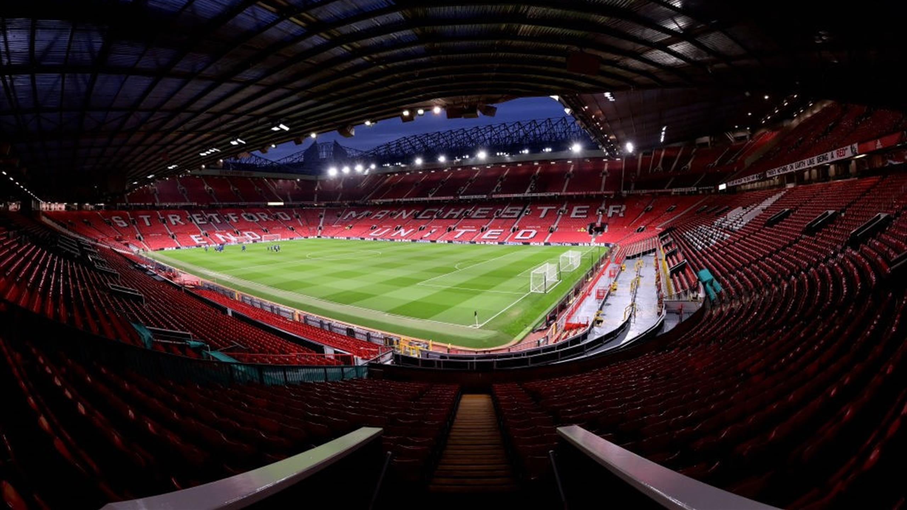

Old Trafford is a historic and iconic football stadium located in Greater Manchester, England. It is the home ground of Manchester United Football Club, one of the most renowned and successful football clubs in the world. Old Trafford holds a special place in the hearts of football fans and is known for its rich history, electrifying atmosphere, and legendary matches.
Old Trafford has undergone several renovations and expansions over the years, but its distinctive architecture and layout have remained largely consistent. The stadium features four main stands: the Sir Alex Ferguson Stand (formerly the North Stand), the Sir Bobby Charlton Stand (formerly the South Stand), the East Stand, and the West Stand. The seating capacity has evolved with time and currently holds around 74,000 spectators, making it one of the largest stadiums in the United Kingdom.
The history of Old Trafford dates back to 1910 when it was opened as the new home for Manchester United. Over the decades, the stadium has witnessed countless historic moments, including remarkable victories, dramatic comebacks, and the rise of football legends. It's where Sir Matt Busby and Sir Alex Ferguson, two of the most legendary football managers, led the club to numerous domestic and international successes.
Old Trafford's atmosphere on match days is nothing short of electrifying. The stands are filled with passionate supporters, collectively known as the "Red Devils" fans, who create an intense and vibrant environment. The stadium's nickname, the "Theatre of Dreams," encapsulates the dreams and aspirations of both players and fans alike. The Stretford End, part of the Sir Bobby Charlton Stand, is especially renowned for its vocal and unwavering support.
Old Trafford's status extends beyond the football pitch. It's recognized worldwide not only for its sporting significance but also as a symbol of Manchester United's global fanbase and cultural impact. The stadium has been the setting for historic clashes, crucial derbies, and emotional celebrations, contributing to its iconic status in the world of sports.
In summary, Old Trafford is more than just a football stadium; it's a living testament to the history, passion, and legacy of Manchester United. Its grandeur, history, and ongoing role in football culture make it a revered destination for football enthusiasts and a symbol of the beautiful game's power to unite and inspire.